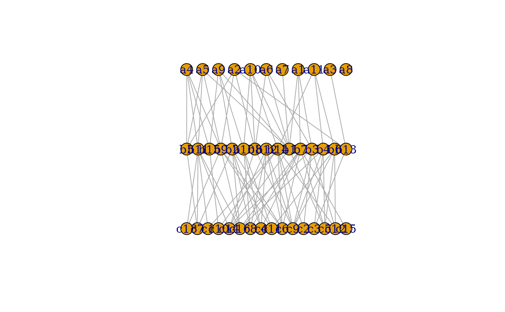

Generating a network of three layers. All layers of network contain lay_0, lay_1 and lay_2 nodes respectively.
build_net(lay_0, lay_1, lay_2, C_lay, asmatrices = FALSE)The number of nodes in the first layer.
The number of nodes in the second layer.
The number of nodes in the third layer.
The probability of each node interact with the other one. It ranges from 0 to 1.
Logical. whether to output the overall adjacency matrix of the network and the corresponding interaction matrix of the respective subnetworks. Defaults to FALSE.
Return a tripatite network of direction. The network contains three groups of species and interactions within layers, and there is no link among each group of nodes within one layer.
Pilosof, S., Porter, M., Pascual, M. et al. The multilayer nature of ecological networks. Nat Ecol Evol 1, 0101 (2017). https://doi.org/10.1038/s41559-017-0101
set.seed(12)
d <- build_net(11,15,16,0.2)
plot(d)

set.seed(12)
N <- build_net(11,15,16,0.2,asmatrices=FALSE)
N
#> IGRAPH 3d183f4 DN-- 42 86 --
#> + attr: layout (g/n), name (v/c), level (v/n)
#> + edges from 3d183f4 (vertex names):
#> [1] S2 ->S32 S2 ->S31 S26->S25 S26->S6 S26->S40 S16->S40 S16->S11 S16->S33
#> [9] S27->S6 S27->S10 S27->S4 S5 ->S6 S5 ->S10 S38->S25 S28->S11 S28->S14
#> [17] S34->S33 S8 ->S12 S8 ->S4 S39->S25 S39->S12 S39->S13 S39->S31 S18->S29
#> [25] S18->S13 S18->S35 S18->S33 S29->S42 S29->S3 S29->S21 S29->S1 S29->S20
#> [33] S32->S37 S32->S9 S32->S30 S32->S17 S32->S21 S32->S15 S6 ->S9 S6 ->S17
#> [41] S6 ->S41 S6 ->S19 S12->S41 S10->S37 S10->S3 S10->S1 S7 ->S23 S7 ->S9
#> [49] S7 ->S42 S7 ->S36 S7 ->S1 S7 ->S20 S40->S30 S40->S22 S40->S3 S40->S1
#> [57] S40->S15 S13->S37 S13->S30 S13->S36 S13->S1 S13->S15 S4 ->S9 S35->S37
#> + ... omitted several edges